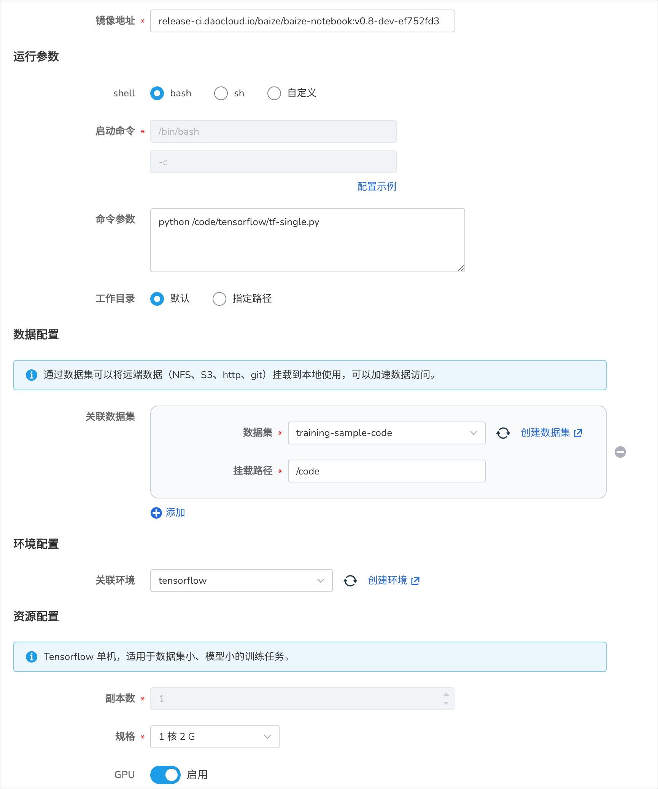
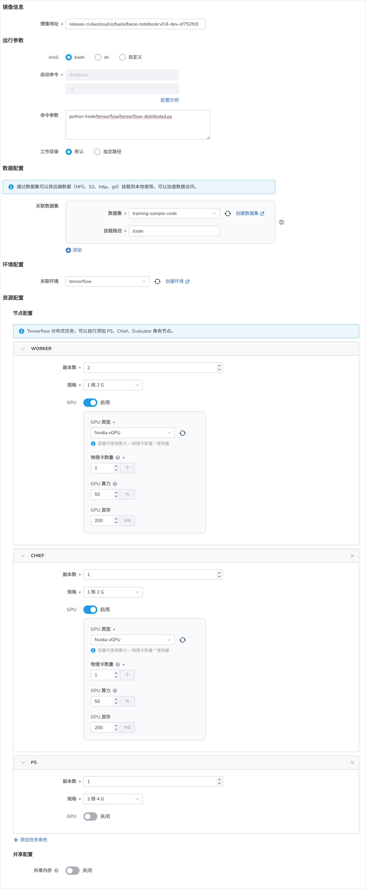

Tensorflow 任务¶
Tensorflow 是除了 Pytorch 另外一个非常活跃的开源的深度学习框架，它提供了一个灵活的训练和部署环境。
在 AI Lab 中，我们同样提供了 Tensorflow 框架的支持和适配，您可以通过界面化操作，快速创建 Tensorflow 任务，进行模型训练。
任务配置介绍¶
- 任务类型同时支持
Tensorflow 单机和Tensorflow 分布式两种模式。 - 运行镜像内已经默认支持 Tensorflow 框架，无需额外安装。
任务运行环境¶
在这里我们使用 baize-notebook 基础镜像 和 关联环境 的方式来作为任务基础运行环境。
了解如何创建环境，请参考环境列表。
创建任务¶
示例 TFJob 单机任务¶

- 登录 AI Lab 平台，点击左侧导航栏中的 任务中心 ，进入 训练任务 页面。
- 点击右上角的 创建 按钮，进入任务创建页面。
- 选择任务类型为
Tensorflow 单机，点击 下一步 。 - 填写任务名称、描述后点击 确定 。
提前预热代码仓库¶
使用 AI Lab -> 数据集列表 ，创建一个数据集，并将远端 Github 的代码拉取到数据集中， 这样在创建任务时，可以直接选择数据集，将代码挂载到任务中。
演示代码仓库地址：https://github.com/d-run/training-sample-code/
运行参数¶
- 启动命令 使用
bash - 命令参数使用
python /code/tensorflow/tf-single.py
"""
pip install tensorflow numpy
"""
import tensorflow as tf
import numpy as np
# 创建一些随机数据
x = np.random.rand(100, 1)
y = 2 * x + 1 + np.random.rand(100, 1) * 0.1
# 创建一个简单的模型
model = tf.keras.Sequential([
tf.keras.layers.Dense(1, input_shape=(1,))
])
# 编译模型
model.compile(optimizer='adam', loss='mse')
# 训练模型，将 epochs 改为 10
history = model.fit(x, y, epochs=10, verbose=1)
# 打印最终损失
print('Final loss: {' + str(history.history['loss'][-1]) +'}')
# 使用模型进行预测
test_x = np.array([[0.5]])
prediction = model.predict(test_x)
print(f'Prediction for x=0.5: {prediction[0][0]}')
运行结果¶
任务提交成功后，可以进入任务详情查看到资源的使用情况，从右上角去往 工作负载详情 ，可以查看训练过程中的日志输出。
TFJob 分布式任务¶
- 登录 AI Lab ，点击左侧导航栏中的 任务中心 ，进入 任务列表 页面。
- 点击右上角的 创建 按钮，进入任务创建页面。
- 选择任务类型为
Tensorflow 分布式，点击 下一步 。 - 填写任务名称、描述后点击 确定 。
示例任务介绍¶

本次包含了三种角色：Chief、Worker 和 Parameter Server (PS)。
- Chief: 主要负责协调训练过程和模型检查点的保存。
- Worker: 执行实际的模型训练。
- PS: 在异步训练中用于存储和更新模型参数。
为不同的角色分配了不同的资源。Chief 和 Worker 使用 GPU，而 PS 使用 CPU 和较大的内存。
运行参数¶
- 启动命令 使用
bash - 命令参数使用
python /code/tensorflow/tensorflow-distributed.py
import os
import json
import tensorflow as tf
class SimpleModel(tf.keras.Model):
def __init__(self):
super(SimpleModel, self).__init__()
self.fc = tf.keras.layers.Dense(1, input_shape=(10,))
def call(self, x):
return self.fc(x)
def train():
# 打印环境信息
print(f"TensorFlow version: {tf.__version__}")
print(f"GPU available: {tf.test.is_gpu_available()}")
if tf.test.is_gpu_available():
print(f"GPU device count: {len(tf.config.list_physical_devices('GPU'))}")
# 获取分布式训练信息
tf_config = json.loads(os.environ.get('TF_CONFIG') or '{}')
task_type = tf_config.get('task', {}).get('type')
task_id = tf_config.get('task', {}).get('index')
print(f"Task type: {task_type}, Task ID: {task_id}")
# 设置分布式策略
strategy = tf.distribute.experimental.MultiWorkerMirroredStrategy()
with strategy.scope():
model = SimpleModel()
loss_fn = tf.keras.losses.MeanSquaredError()
optimizer = tf.keras.optimizers.SGD(learning_rate=0.001)
# 生成一些随机数据
data = tf.random.normal((100, 10))
labels = tf.random.normal((100, 1))
@tf.function
def train_step(inputs, labels):
with tf.GradientTape() as tape:
predictions = model(inputs)
loss = loss_fn(labels, predictions)
gradients = tape.gradient(loss, model.trainable_variables)
optimizer.apply_gradients(zip(gradients, model.trainable_variables))
return loss
for epoch in range(10):
loss = train_step(data, labels)
if task_type == 'chief':
print(f'Epoch {epoch}, Loss: {loss.numpy():.4f}')
if __name__ == '__main__':
train()
运行结果¶
同样，我们可以进入任务详情，查看资源的使用情况，以及每个 Pod 的日志输出。